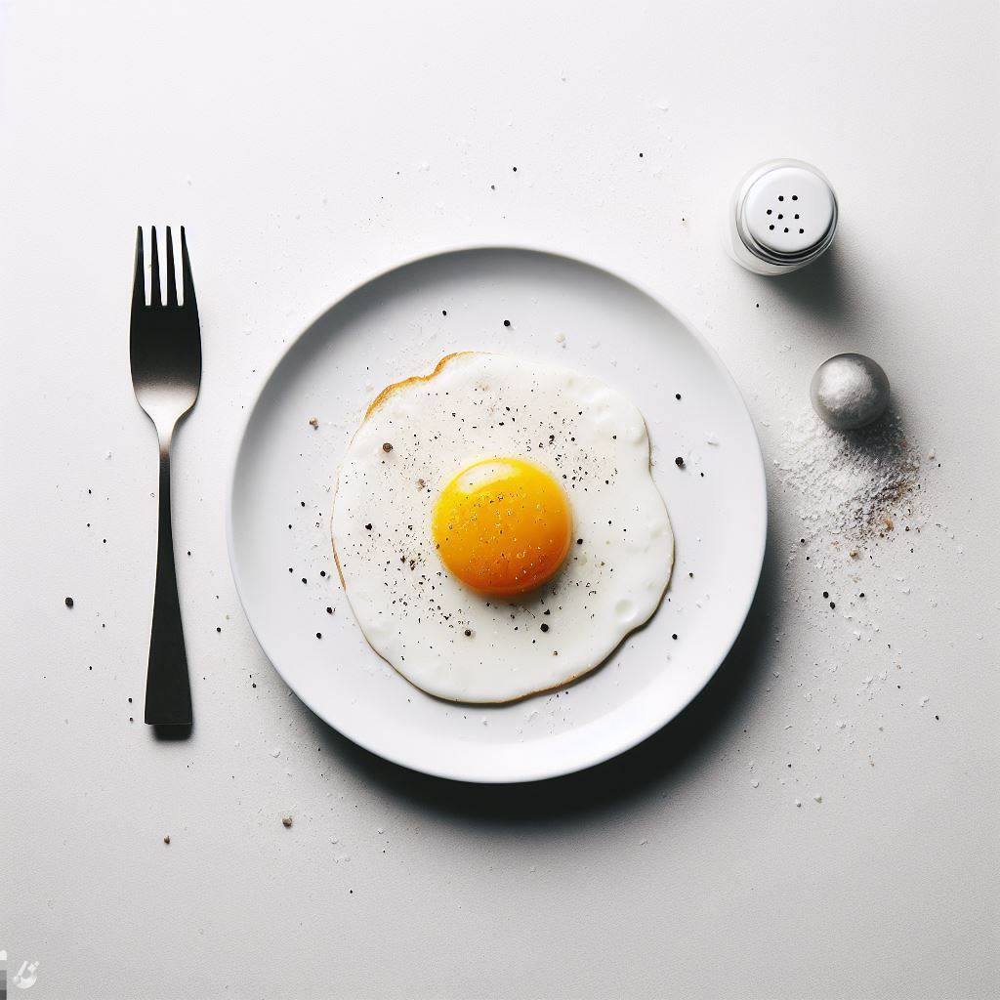

Fried Egg
Ingredients:
- 1 large egg
- 1 teaspoon of oil or butter
- Salt and pepper to taste
How to Cook:
- In a small skillet over medium-high heat, heat the oil or butter and swirl to coat the pan.
- Crack the egg and gently slide it into the pan. Cook for about 3 minutes, or until the white is set and the yolk is still runny. You can flip the egg if you want it more cooked.
- Sprinkle some salt and pepper over the egg and transfer it to a plate. Enjoy!